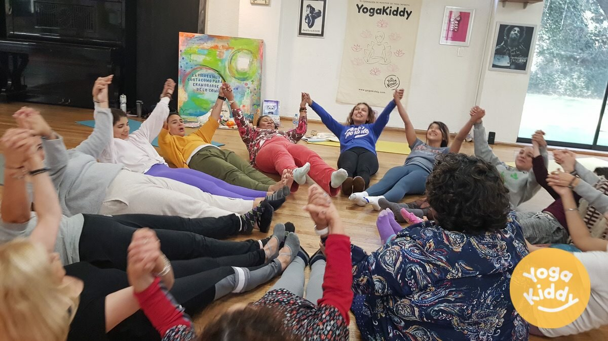
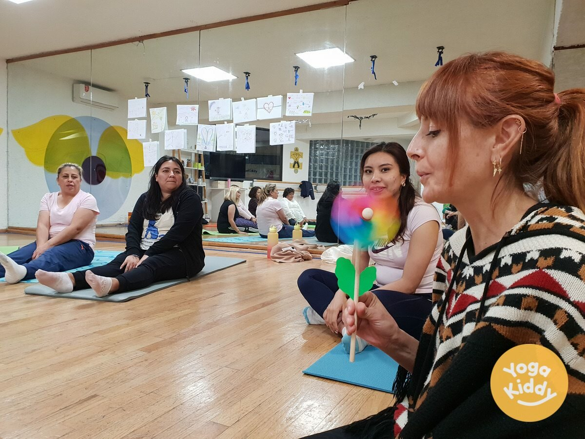
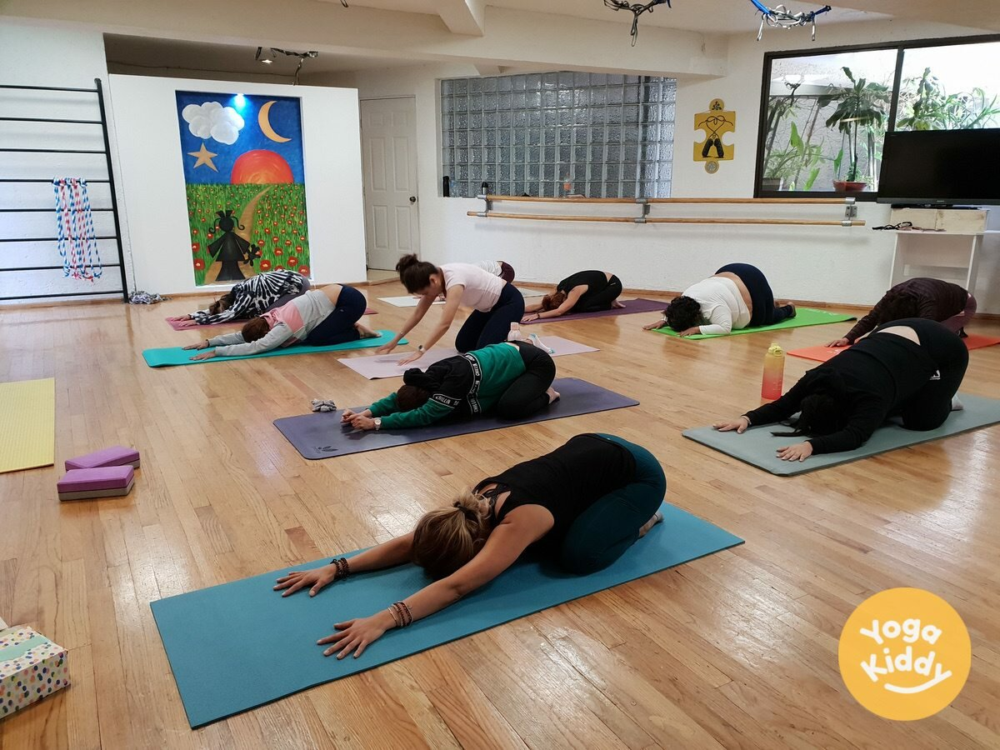
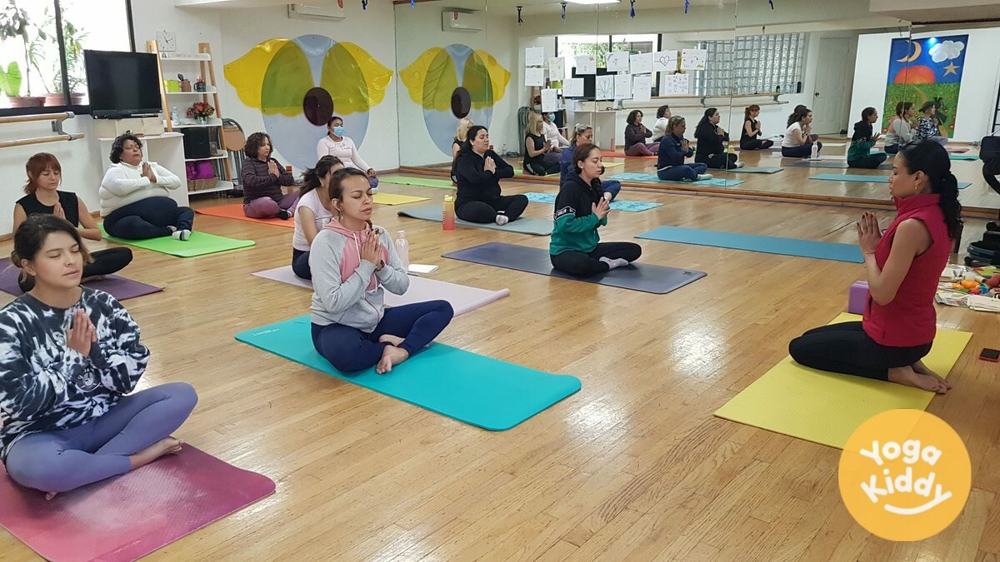
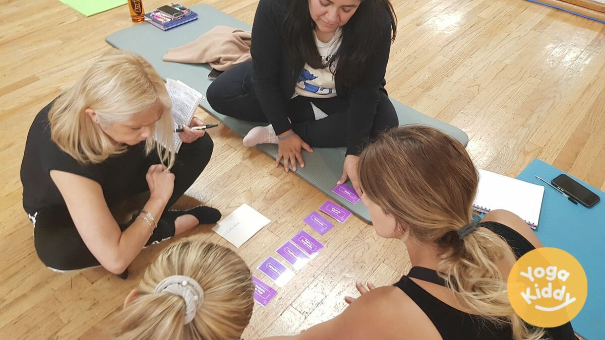
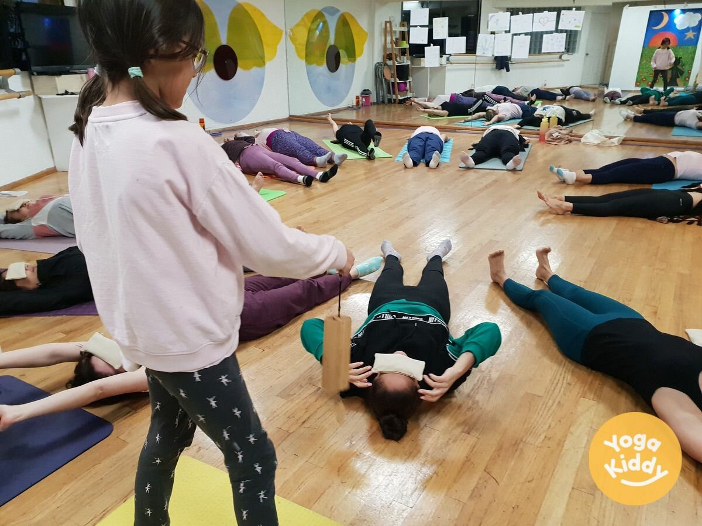
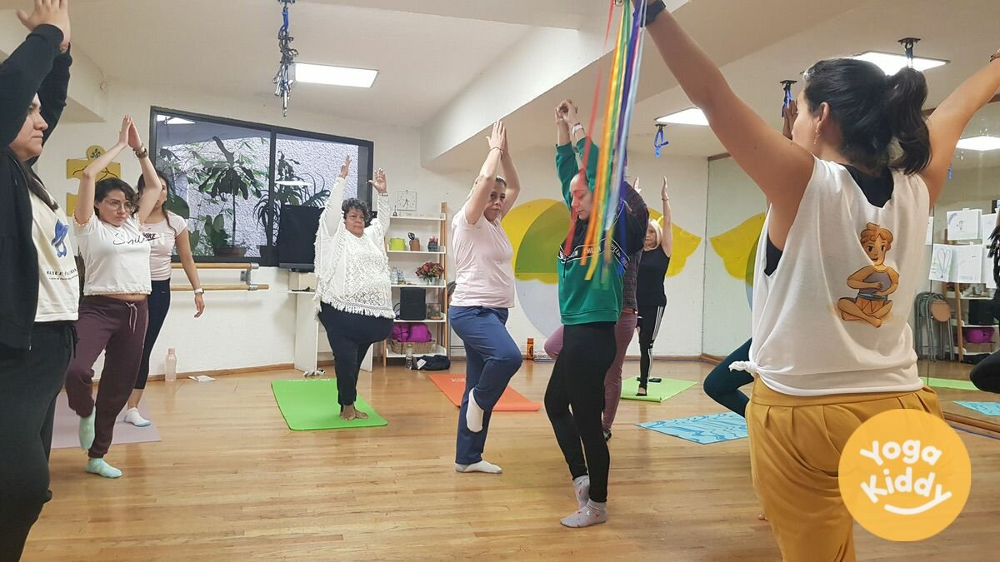
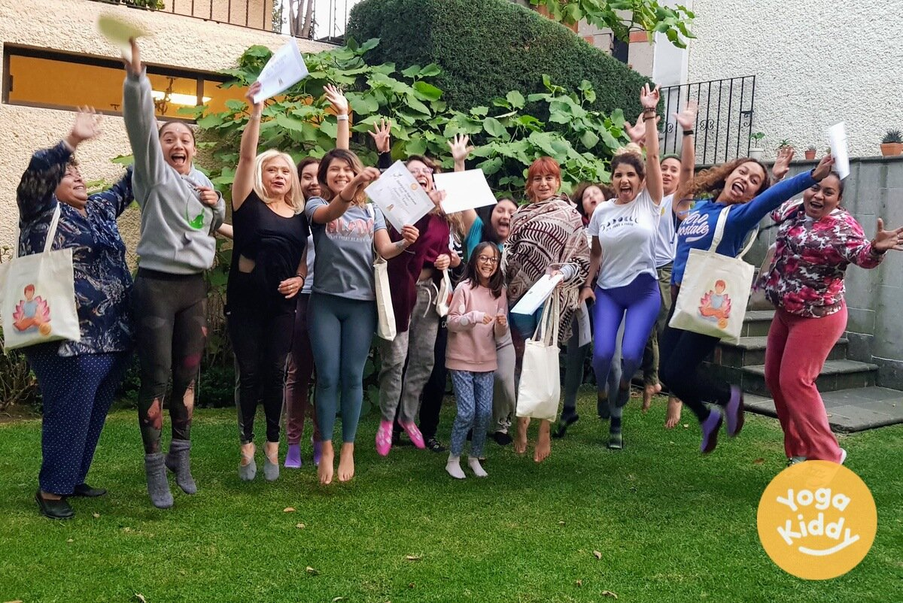

Nuestra última formación, dedicada a la enseñanza de yoga para niños, fue una experiencia verdaderamente transformadora para todos los participantes. El entrenamiento de fin de semana completo, que tuvo lugar en el transcurso de 2 días (18 horas en total) en la vibrante Ciudad de México (CDMX), contó con la participación de un grupo de mujeres apasionadas y dedicadas que estaban ansiosas por aprender sobre las técnicas para practicar yoga con niños de una manera entretenida y atractiva.

Desde el momento en que comenzó la capacitación, quedó claro que nos esperaba una experiencia especial. La energía en la sala era eléctrica, ya que los participantes fueron introducidos a una variedad de posturas de yoga y ejercicios que están diseñados específicamente para los niños. Aprendieron a adaptar estas posturas a las necesidades y capacidades de los distintos grupos de edad y a hacer que la práctica fuera divertida y atractiva para niños de todas las edades.

A lo largo de la formación, los participantes tuvieron la oportunidad de hacer preguntas, compartir sus propias experiencias y aprender unos de otros. Fue realmente inspirador ver lo abiertos y receptivos que estaban todos a aprender cosas nuevas, y lo deseosos que estaban de aplicar sus nuevos conocimientos a sus propias prácticas docentes.

Uno de los aspectos más destacados de la formación fueron las sesiones prácticas, durante las cuales los participantes tuvieron la oportunidad de impartir mini clases de yoga entre ellos. Esto les permitió poner en práctica sus nuevos conocimientos y habilidades en un entorno de apoyo y seguridad, y recibir comentarios de sus compañeros e instructores.

Además de la práctica física del yoga, los participantes también recibieron orientación sobre cómo crear planes de clases, establecer metas y objetivos para sus clases y cómo manejar situaciones difíciles que puedan surgir durante una clase. Todo ello les proporcionó una comprensión holística de cómo enseñar yoga a los niños y cómo crear un entorno seguro y divertido para que los niños aprendan y practiquen yoga.

Los comentarios de los participantes fueron abrumadoramente positivos. Afirmaron sentirse más seguros y bien equipados para enseñar yoga a los niños tras completar la formación. También destacaron lo mucho que disfrutaron de la experiencia y lo mucho que aprendieron de sus compañeros e instructores.

En conclusión, nuestra última formación sobre la enseñanza del yoga a los niños fue una experiencia verdaderamente transformadora para todos los participantes. Las mujeres que participaron en la formación se sintieron bien preparadas, seguras y entusiasmadas para empezar a enseñar yoga a los niños. Adquirieron las habilidades y conocimientos necesarios para compartir los beneficios del yoga de una manera entretenida y atractiva, y para crear un ambiente seguro y divertido para que los niños aprendan y practiquen yoga. Creemos que esta formación tiene el potencial de influir positivamente en la salud, el desarrollo y el bienestar de los niños, y esperamos tener la oportunidad de ofrecerla de nuevo en el futuro.
